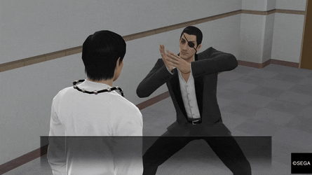
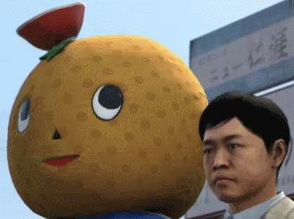
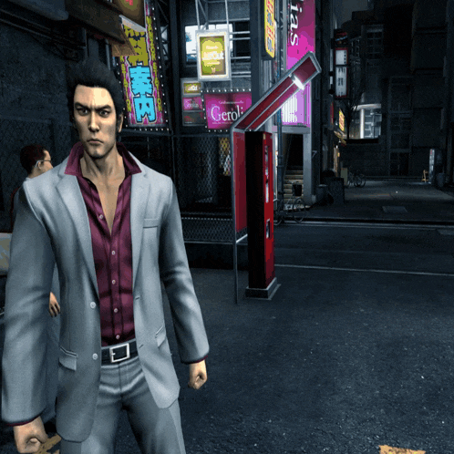

Ora arriva il bello.
Quello che stavamo aspettando. Quello con cui ho (spero) catturato la tua attenzione all'inizio. Questa è la vera essenza di Yakuza !!!!





...si forse non è quello che vi l'aspettavate ma non importa. Bisogna amarlo per quello che è.
Infatti, sono talmente determinato a farvelo amare che ho rubato un video da Youtube e ve lo mostrerò.
Credito va a TRIP B su Youtube.
QUESTA è LA VERA ESSENZA DI YAKUZA!!!!!